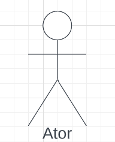

Casos de Uso
Introdução
O diagrama de casos de uso descreve um conjunto de ações, chamados de casos de uso, que um sistema desempenha, levando em consideração os usuários externos ao sistema. Ele pode ser usado para descrever as principais funcionalidades do sistema e a interação com os usuários.
Metodologia
Para a criação desse artefato foi utilizado a abordagem tradicional, ou seja, representação os casos de uso através de uma diagrama UML. A ferramenta utilizada para a criação do diagrama foi o LucidChart, um software online para criação de diagramas.
Componentes e símbolos
Um diagrama de casos de uso é composto pelos elementos descritos a seguir.
Atores
Representam os usuários e sistemas envolvidos nas interações, e normalmente são representados por bonecos de palitos (Figura 1).

Figura 1: Ator (Fonte: autores, 2022).
Cenário
Sequência de eventos que acontecem quando um usuário interage com o sistema. Geralmente representado por uma caixa (Figura 2). Todos os casos de uso fora da caixa são considerados fora do escopo do sistema.
Figura 2: Cenário (Fonte: autores, 2022).
Caso de uso
Caso de uso é uma atividade ou funcionalidade realizada pelo usuário. Geralmente são definidos na forma oval horizontal (Figura 3), onde cada forma é um uso diferente que o usuário pode ter. Como são ações, recomenda-se o uso de verbos no infinitivo para descrevê-las.
Figura 3: Caso de uso (Fonte: autores, 2022).
Comunicação (ou ação)
Como o verbo já diz, é a ação que comunica o usuário ao caso de uso, e pode ser visualizada na Figura 4. Para melhorar o entendimento, a ação pode ser definidas de duas formas, sendo elas:
Inclusão: Relação em que um caso de uso quando precisa ter sua funcionalidade executada através de outro caso de uso. Em outras palavras, quando um caso de uso A inclui um caso de uso B, onde quando o caso de uso A ser executado, o caso de uso B necessariamente será executado também.
- Notação no diagrama: <<includes>>
Extensão: Já a extensão significa que o caso de uso atual irá funcionar normalmente, porem alguns serão adicionados novos passos no caso de uso estendido. Ou seja, quando o caso de uso A é estendido pelo caso de uso B, se o primeiro for executado, o caso de uso B pode (ou não) ser executado também.
- Notação no diagrama: <<extends>>
Figura 4: Cenário (Fonte: autores, 2022).
Diagrama de Casos de Uso
Figura 5: Diagrama de casos de uso 2ª versão. 1ª versão. (Fonte: autores, 2022).
{kind=link}
A seguir, a especificação dos casos de uso identificados.
UC01. Ingressar em uma partida rápida
| UC01 | Ingressar em uma partida rápida |
|---|---|
| Atores | |
| Frequência de uso | Média |
| Requisitos | Conexão com a internet |
| Condição de entrada | O usuário seleciona uma das opções de partidas rápidas na tela inicial |
| Fluxo principal |
|
| Fluxos alternativos | Não há |
| Fluxos de exceção | Fluxo 1. O sistema não encontrou um oponente disponível
|
| Pós condições | O usuário inicia uma partida rápida contra outro oponente |
| Rastreabilidade | B16 |
Tabela 1: Especificação do caso de uso: Ingressar em uma partida rápida. (Fonte: autores, 2022).
UC02. Jogar com um robô
| UC02 | Jogar com um robô |
|---|---|
| Atores | |
| Frequência de uso | Alta |
| Requisitos | Não há |
| Condição de entrada | O usuário seleciona a opção "jogar contra o computador" na tela inicial |
| Fluxo principal |
|
| Fluxos alternativos | Não há |
| Fluxos de exceção | Não há |
| Pós condições | O usuário inicia uma partida rápida contra o computador |
| Rastreabilidade | INT01 |
Tabela 2: Especificação do caso de uso: Jogar com um robô. (Fonte: autores, 2022).
UC03. Observar partidas
| UC03 | Observar partidas |
|---|---|
| Atores | |
| Frequência de uso | Baixa |
| Requisitos | Conexão com a internet |
| Condição de entrada | O usuário seleciona a opção "Assistir partidas" no menu principal |
| Fluxo principal |
|
| Fluxos alternativos | Não há |
| Fluxos de exceção | Fluxo 2. Falha na conexão com a internet
|
| Pós condições | O usuário assiste a partida entre dois jogadores |
| Rastreabilidade | ST06 |
Tabela 3: Especificação do caso de uso: Observar partidas. (Fonte: autores, 2022).
UC04. Aprender
| UC04 | Aprender |
|---|---|
| Atores | |
| Frequência de uso | Baixa |
| Requisitos | Conexão com a internet |
| Condição de entrada | O usuário seleciona a opção "Aprender" no menu principal |
| Fluxo principal |
|
| Fluxos alternativos | Não há |
| Fluxos de exceção | Fluxo 1. Falha na conexão com a internet
|
| Pós condições | O usuário estuda sobre novas jogadas |
| Rastreabilidade | INT07, INT12, INT13, INT14, ST11 |
Tabela 4: Especificação do caso de uso: Aprender. (Fonte: autores, 2022).
UC05. Ver classificação
| UC05 | Ver classificação |
|---|---|
| Atores | |
| Frequência de uso | Baixa |
| Requisitos | Conexão com a internet |
| Condição de entrada | O usuário seleciona a opção "Tabela de lidenrança" no menu principal |
| Fluxo principal |
|
| Fluxos de exceção | Fluxo 1. Falha na conexão com a internet
|
| Fluxos de exceção | Não há |
| Pós condições | O usuário consegue visualizar sua classificação semanal |
| Rastreabilidade | ST10 |
Tabela 5: Especificação do caso de uso: Ver a classificação semanal. (Fonte: autores, 2022).
Bibliografia
[1] DevMedia. O que é UML e Diagramas de Caso de Uso: Introdução Prática à UML. 2012. DevMedia. Disponível em: https://www.devmedia.com.br/o-que-e-uml-e-diagramas-de-caso-de-uso-introducao-pratica-a-uml/23408. Acessado em 07 de dez. de 2022.
[2] IBM. Diagramas de Caso de Uso. IBM. Disponível em: https://www.ibm.com/docs/pt-br/rsm/7.5.0?topic=diagrams-use-case. Acessado em 07 de dez. de 2022
[3] Ferramenta Lucidchart, disponível no link. Acessado em 07 de dez. de 2022.
[4] SERRANO M., SERRANO M. Requisitos - Aula 13. Disponível na plataforma Aprender3. Acessado em 08 de dez. de 2022.
[5] DevMedia. Especificação de Casos de Uso na Prática. 2010. DevMedia. Disponível em no link. Acessado em 09 de dez. de 2022.
Histórico de Versão
| Versão | Data | Descrição | Autor(es) | Revisor(es) |
|---|---|---|---|---|
1.0 |
07/12/2022 | Criação inicial do documento | Lucas Macedo | Nicolas Souza |
1.1 |
09/12/2022 | Inclusão da especificação dos casos de uso 1, 2 e 3. | Nicolas Souza | Lucas Macedo |
1.2 |
10/12/2022 | Inclusão da especificação dos casos de uso 4 e 5 e alteração do diagrama (2ª versão). | Lucas Macedo | Nicolas Souza |